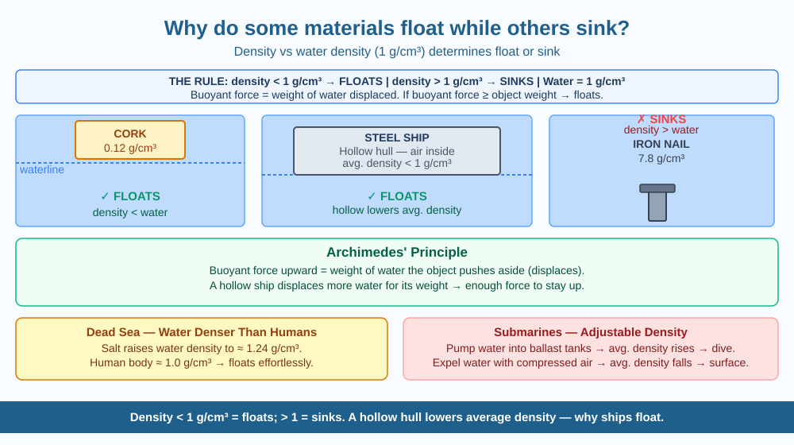

By the end of this lesson, you should be able to define density, explain Archimedes' principle in your own words, and predict whether a given object will float or sink in water.
A massive steel ship weighing thousands of tonnes floats on the ocean. A tiny iron nail dropped into a glass of water sinks immediately. Both are made of similar material. Why does the ship float while the nail sinks?
The key concept is density — how much mass is packed into a given volume.
$$\text{Density} = \frac{\text{Mass}}{\text{Volume}}$$
The density of water is 1 g/cm³ (or 1000 kg/m³). The rule is simple: - If an object's density is less than water's density → it floats - If an object's density is greater than water's density → it sinks
Why the nail sinks: A solid iron nail has a density of about 7.8 g/cm³ — nearly eight times denser than water. It sinks because the water cannot push it up with enough force.
Why a cork floats: Cork has a density of about 0.12 g/cm³ — much less than water. It floats very high, with most of its volume above the surface.
Why the steel ship floats — Archimedes' principle. When an object is placed in water, the water pushes back with an upward force called the buoyant force. Archimedes discovered that this upward force equals the weight of water displaced (pushed aside) by the object. A ship's hull is not a solid block of steel — it is a hollow shape. The hollow interior is filled with air (density ≈ 0.001 g/cm³). The ship + air system has an average density much less than 1 g/cm³, so it floats and displaces only as much water as needed to balance its total weight.
The Dead Sea: The water in the Dead Sea is so salty that its density is about 1.24 g/cm³ — higher than the human body (≈ 1.0 g/cm³). This is why people float effortlessly in the Dead Sea without any swimming effort.
Submarines use this principle deliberately: they pump water into ballast tanks to increase their average density (dive) and expel water using compressed air to decrease it (surface).
Think of it as a competition between two forces: - Gravity pulls the object downward (its weight) - Buoyant force pushes the object upward (= weight of water displaced)
If buoyant force ≥ object's weight → the object floats (or is suspended). If buoyant force < object's weight → the object sinks.
An object floats when it displaces enough water to create a buoyant force equal to its own weight. A hollow or low-density object achieves this easily; a dense solid cannot.
The included SVG shows three comparison columns in water: - Left column (cork, density 0.12 g/cm³): Object floating high above the waterline - Centre column (hollow ship hull, average density < 1): Object sitting at the waterline, displacing a large volume of water - Right column (iron nail, density 7.8 g/cm³): Object sunk to the bottom with a downward arrow
Below each object, a label shows its density value and float/sink outcome. An Archimedes' principle box at the bottom explains buoyant force = weight of water displaced.

A fresh egg sinks in plain water but floats in very salty water. This is because salt raises the water's density above the egg's density.
Sailors in ancient times discovered that their ships rode higher (floated more) in seawater than in river water. A ship fully loaded in the ocean might be dangerously overloaded in a river because the river water's lower density provides less buoyant force for the same volume.
Predict: If you sailed a fully loaded ship from the salty Arabian Sea into the freshwater Ganga river, would the ship sit higher or lower in the water? Why? Would this be a safety concern?
What determines whether an object floats or sinks in water?
Why is understanding density and buoyancy more useful than just knowing which objects float?
If you added salt to water until it became very dense, what would you predict would happen to an egg placed in it?
Without using the word "density," explain to a Class 3 student why a massive ship floats but a small iron nail sinks. Your explanation must mention the ship's hollow shape and the water being "pushed aside." Then give the full scientific explanation using density, buoyancy, and Archimedes' principle.
The largest ship ever built (the Seawise Giant, at 458 metres long and 564,000 tonnes) floated because its average density — metal hull plus all the oil it carried plus the enclosed air spaces — was still less than seawater's density. The ocean didn't "decide" to hold it up; it simply obeyed a 2,200-year-old principle that Archimedes described after noticing his bath overflow.
Density decides: less dense than water = float, more dense = sink. A hollow shape lowers average density — that is why ships float despite being made of steel.